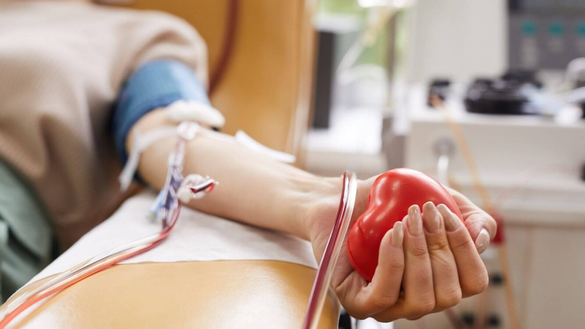
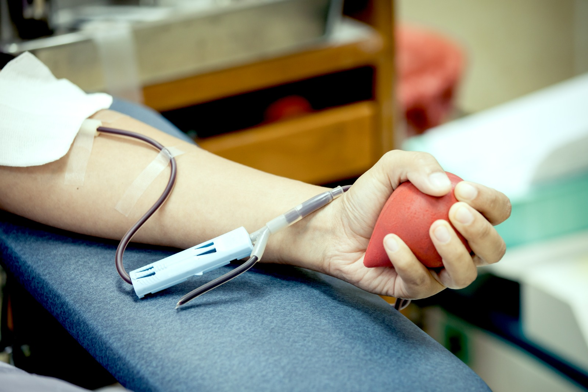
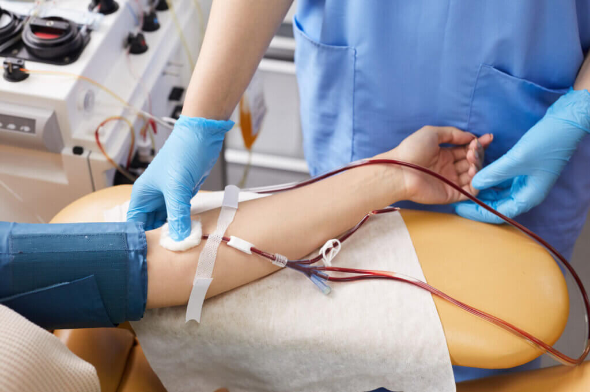
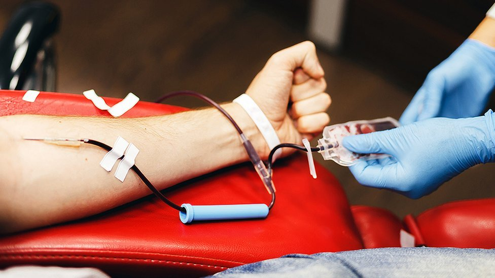

Doação de sangue · Angatuba e região
Doe sangue, salve vidas perto de você.
Encontre a próxima coleta na sua região, veja se há transporte gratuito e garanta sua vaga em poucos minutos.

Agenda de coleta
Ver todasarrow_forward
Próximas campanhas confirmadas
Ordenadas pela distância até Angatuba.
Inscrições abertas
Campanha Mês Amarelo
Inscrever-se
Finalizada
Mutirão Solidário de Abril
Encerrada
Nossa história
Excursões anteriores
Confira alguns momentos das campanhas realizadas pela Rota Solidária.

Mutirão Solidário de Abril
03 de Abril · Sorocaba

Campanha de Março
15 de Março · Sorocaba

Campanha de Fevereiro
20 de Fevereiro · Sorocaba